Complete pvx analysis-window reference. This page covers all 50
supported windows from pvx.core.voc.WINDOW_CHOICES, with formula-family mapping and practical interpretation.
For GitHub-native equation rendering, use
docs/WINDOW_REFERENCE.md.
Quantitative metrics and per-window SVG plots are generated from
docs/window_metrics.json and docs/assets/windows/*.
Window Formula Key
Let $n=0,\dots,N-1$, center index $m=(N-1)/2$, and normalized coordinate $x_n=(n-m)/m$.
(W0) Rectangular: $$w[n]=1$$
(W1) Cosine series: $$w[n]=\sum_{k=0}^{K} a_k\cos\left(\frac{2\pi k n}{N-1}\right)$$
(W2) Sine/Cosine: $$w[n]=\sin\left(\frac{\pi n}{N-1}\right)$$
(W3) Bartlett: $$w[n]=1-\left|\frac{n-m}{m}\right|$$
(W4) Triangular: $$w[n]=\max\left(1-\left|\frac{n-m}{(N+1)/2}\right|,0\right)$$
(W5) Bartlett-Hann: $$x=\frac{n}{N-1}-\frac{1}{2},\quad w[n]=0.62-0.48|x|+0.38\cos(2\pi x)$$
(W6) Tukey:
$$x=\frac{n}{N-1},\quad w[n]=\begin{cases} \frac{1}{2}\left(1+\cos\left(\pi\left(\frac{2x}{\alpha}-1\right)\right)\right), & 0\le x<\frac{\alpha}{2} \\ 1, & \frac{\alpha}{2}\le x<1-\frac{\alpha}{2} \\ \frac{1}{2}\left(1+\cos\left(\pi\left(\frac{2x}{\alpha}-\frac{2}{\alpha}+1\right)\right)\right), & 1-\frac{\alpha}{2}\le x\le 1 \end{cases}$$
pvx special cases: $\alpha\le 0$ is rectangular and $\alpha\ge 1$ becomes Hann.
(W7) Parzen:
$$u=\left|\frac{2n}{N-1}-1\right|,\quad w[n]=\begin{cases}
1-6u^2+6u^3, & 0\le u\le \frac{1}{2} \\
2(1-u)^3, & \frac{1}{2}
(W8) Lanczos: $$w[n]=\mathrm{sinc}\left(\frac{2n}{N-1}-1\right)$$
(W9) Welch: $$w[n]=\max\left(1-x_n^2,0\right)$$
(W10) Gaussian: $$w[n]=\exp\left(-\frac{1}{2}\left(\frac{n-m}{\sigma}\right)^2\right),\ \sigma=r_\sigma m$$
(W11) General Gaussian: $$w[n]=\exp\left(-\frac{1}{2}\left|\frac{n-m}{\sigma}\right|^{2p}\right)$$
(W12) Exponential: $$w[n]=\exp\left(-\frac{|n-m|}{\tau}\right),\ \tau=r_\tau m$$
(W13) Cauchy: $$w[n]=\frac{1}{1+\left(\frac{n-m}{\gamma}\right)^2},\ \gamma=r_\gamma m$$
(W14) Cosine power: $$w[n]=\sin\left(\frac{\pi n}{N-1}\right)^p$$
(W15) Hann-Poisson: $$w[n]=w_{\text{Hann}}[n]\exp\left(-\alpha\frac{|n-m|}{m}\right)$$
(W16) General Hamming: $$w[n]=\alpha-(1-\alpha)\cos\left(\frac{2\pi n}{N-1}\right)$$
(W17) Bohman: $$x=\left|\frac{2n}{N-1}-1\right|,\ \ w[n]=(1-x)\cos(\pi x)+\frac{\sin(\pi x)}{\pi}$$
(W18) Kaiser: $$w[n]=\frac{I_0\left(\beta\sqrt{1-r_n^2}\right)}{I_0(\beta)},\quad r_n=\frac{n-m}{m}$$
Each window name in the table maps to one formula family above plus fixed constants/shape parameters.
| Window | Family | Parameters | Formula key | Coherent gain | ENBW (bins) | Scalloping loss (dB) | Main-lobe width (bins) | Peak sidelobe (dB) | Plots | Plain-English behavior | Pros | Cons | Usage advice |
|---|---|---|---|---|---|---|---|---|---|---|---|---|---|
hann | Cosine series | coeffs=(0.5, -0.5) | W1 | 0.499756 | 1.500733 | -1.422 | 4.000 | -31.468 | time / freq | Cosine-sum taper balancing leakage and resolution. | Balanced leakage suppression and frequency resolution. | Not optimal for amplitude metering or extreme sidelobe rejection. | Default choice for most pvx time-stretch and pitch-shift workflows. |
hamming | Cosine series | coeffs=(0.54, -0.46) | W1 | 0.539775 | 1.363305 | -1.750 | 4.000 | -42.675 | time / freq | Cosine-sum taper balancing leakage and resolution. | Balanced leakage suppression and frequency resolution. | Not optimal for amplitude metering or extreme sidelobe rejection. | Default choice for most pvx time-stretch and pitch-shift workflows. |
blackman | Cosine series | coeffs=(0.42, -0.5, 0.08) | W1 | 0.419795 | 1.727601 | -1.098 | 6.000 | -58.109 | time / freq | Cosine-sum taper balancing leakage and resolution. | Strong sidelobe suppression for cleaner spectral separation. | Wider main lobe than Hann/Hamming. | Use for dense harmonic material when leakage artifacts dominate. |
blackmanharris | Cosine series | coeffs=(0.35875, -0.48829, 0.14128, -0.01168) | W1 | 0.358575 | 2.005332 | -0.825 | 8.000 | -92.011 | time / freq | Cosine-sum taper balancing leakage and resolution. | Strong sidelobe suppression for cleaner spectral separation. | Wider main lobe than Hann/Hamming. | Use for dense harmonic material when leakage artifacts dominate. |
nuttall | Cosine series | coeffs=(0.355768, -0.487396, 0.144232, -0.012604) | W1 | 0.355594 | 2.022220 | -0.811 | 8.000 | -93.325 | time / freq | Cosine-sum taper balancing leakage and resolution. | Strong sidelobe suppression for cleaner spectral separation. | Wider main lobe than Hann/Hamming. | Use for dense harmonic material when leakage artifacts dominate. |
flattop | Cosine series | coeffs=(1, -1.93, 1.29, -0.388, 0.0322) | W1 | 0.999514 | 3.772117 | -0.016 | 10.000 | -68.311 | time / freq | Cosine-sum taper balancing leakage and resolution. | Very accurate amplitude estimation in FFT bins. | Very wide main lobe and reduced frequency discrimination. | Use for measurement-grade magnitude tracking, not fine pitch separation. |
blackman_nuttall | Cosine series | coeffs=(0.363582, -0.489177, 0.1366, -0.0106411) | W1 | 0.363405 | 1.977073 | -0.850 | 8.000 | -98.174 | time / freq | Cosine-sum taper balancing leakage and resolution. | Strong sidelobe suppression for cleaner spectral separation. | Wider main lobe than Hann/Hamming. | Use for dense harmonic material when leakage artifacts dominate. |
exact_blackman | Cosine series | coeffs=(0.426591, -0.496561, 0.0768487) | W1 | 0.426386 | 1.694500 | -1.149 | 6.000 | -68.236 | time / freq | Cosine-sum taper balancing leakage and resolution. | Strong sidelobe suppression for cleaner spectral separation. | Wider main lobe than Hann/Hamming. | Use for dense harmonic material when leakage artifacts dominate. |
sine | Sinusoidal | none | W2 | 0.636309 | 1.234304 | -2.096 | 3.000 | -22.999 | time / freq | Raised-sine taper; smooth edges with moderate main-lobe width. | Smooth endpoint behavior and straightforward implementation. | Less configurable than Kaiser/Tukey families. | Use for stable, low-complexity alternatives to Hann. |
bartlett | Triangular | none | W3 | 0.499756 | 1.333985 | -1.822 | 4.000 | -26.523 | time / freq | Linear triangular taper; simple and fast. | Cheap linear taper with intuitive behavior. | Higher sidelobes than stronger cosine-sum windows. | Use for low-cost processing or quick exploratory runs. |
boxcar | Rectangular | none | W0 | 1.000000 | 1.000000 | -3.922 | 2.000 | -13.264 | time / freq | No tapering; best frequency resolution but strongest leakage. | Narrowest main lobe and maximal bin sharpness. | Highest sidelobes and strongest leakage/phasiness on non-bin-centered content. | Use only for controlled test tones or when leakage is acceptable. |
triangular | Triangular | none | W4 | 0.500244 | 1.332683 | -1.826 | 4.000 | -26.523 | time / freq | Triangular taper variant with denominator $(N+1)/2$. | Cheap linear taper with intuitive behavior. | Higher sidelobes than stronger cosine-sum windows. | Use for low-cost processing or quick exploratory runs. |
bartlett_hann | Hybrid taper | fixed coefficients | W5 | 0.499756 | 1.456559 | -1.517 | 4.000 | -35.874 | time / freq | Blend of Bartlett-like slope and cosine curvature. | Moderate leakage suppression with lightweight computation. | Less common and less interpretable than standard Hann/Hamming. | Use as a middle-ground taper when Bartlett feels too sharp. |
tukey | Tukey | alpha=0.5 | W6 | 0.749634 | 1.222819 | -2.236 | 2.656 | -15.123 | time / freq | Cosine tapers at edges with flat center region. | Interpolates between rectangular and Hann behavior. | Behavior changes strongly with alpha and can be inconsistent across presets. | Use when you need a controllable flat center with soft edges. |
tukey_0p1 | Tukey | alpha=0.1 | W6 | 0.949536 | 1.039289 | -3.505 | 2.094 | -13.309 | time / freq | Cosine tapers at edges with flat center region. | Interpolates between rectangular and Hann behavior. | Behavior changes strongly with alpha and can be inconsistent across presets. | Use when you need a controllable flat center with soft edges. |
tukey_0p25 | Tukey | alpha=0.25 | W6 | 0.874573 | 1.102579 | -2.960 | 2.281 | -13.601 | time / freq | Cosine tapers at edges with flat center region. | Interpolates between rectangular and Hann behavior. | Behavior changes strongly with alpha and can be inconsistent across presets. | Use when you need a controllable flat center with soft edges. |
tukey_0p75 | Tukey | alpha=0.75 | W6 | 0.624695 | 1.360664 | -1.728 | 3.188 | -19.395 | time / freq | Cosine tapers at edges with flat center region. | Interpolates between rectangular and Hann behavior. | Behavior changes strongly with alpha and can be inconsistent across presets. | Use when you need a controllable flat center with soft edges. |
tukey_0p9 | Tukey | alpha=0.9 | W6 | 0.549731 | 1.446988 | -1.521 | 3.625 | -24.972 | time / freq | Cosine tapers at edges with flat center region. | Interpolates between rectangular and Hann behavior. | Behavior changes strongly with alpha and can be inconsistent across presets. | Use when you need a controllable flat center with soft edges. |
parzen | Polynomial | piecewise cubic | W7 | 0.374817 | 1.918397 | -0.897 | 8.000 | -53.046 | time / freq | Smooth piecewise cubic window with strong sidelobe suppression. | Smooth high-order taper with good sidelobe control. | Broader main lobe than lightweight windows. | Use for spectral denoising/analysis where sidelobe cleanup is critical. |
lanczos | Sinc | none | W8 | 0.589202 | 1.299668 | -1.889 | 3.281 | -26.405 | time / freq | Sinc-based taper with useful compromise for spectral analysis. | Sinc-derived shape with useful compromise behavior. | Can exhibit oscillatory spectral behavior versus cosine-sum defaults. | Use for interpolation-adjacent analysis experiments. |
welch | Quadratic | none | W9 | 0.666341 | 1.200587 | -2.223 | 2.875 | -21.295 | time / freq | Parabolic taper emphasizing center samples. | Center-emphasizing parabola with simple form. | Not as strong at sidelobe suppression as Blackman-family windows. | Use when center weighting is desired with minimal complexity. |
gaussian_0p25 | Gaussian | sigma_ratio=0.25 | W10 | 0.313156 | 2.258144 | -0.668 | 11.406 | -87.677 | time / freq | Bell-shaped taper; smaller sigma gives stronger edge attenuation. | Smooth bell taper with low ringing and predictable decay. | Frequency resolution changes noticeably with sigma. | Use sigma presets to tune transient locality versus spectral leakage. |
gaussian_0p35 | Gaussian | sigma_ratio=0.35 | W10 | 0.436580 | 1.626488 | -1.268 | 6.719 | -52.077 | time / freq | Bell-shaped taper; smaller sigma gives stronger edge attenuation. | Smooth bell taper with low ringing and predictable decay. | Frequency resolution changes noticeably with sigma. | Use sigma presets to tune transient locality versus spectral leakage. |
gaussian_0p45 | Gaussian | sigma_ratio=0.45 | W10 | 0.548949 | 1.320556 | -1.869 | 4.125 | -35.366 | time / freq | Bell-shaped taper; smaller sigma gives stronger edge attenuation. | Smooth bell taper with low ringing and predictable decay. | Frequency resolution changes noticeably with sigma. | Use sigma presets to tune transient locality versus spectral leakage. |
gaussian_0p55 | Gaussian | sigma_ratio=0.55 | W10 | 0.641515 | 1.171861 | -2.350 | 3.000 | -28.906 | time / freq | Bell-shaped taper; smaller sigma gives stronger edge attenuation. | Smooth bell taper with low ringing and predictable decay. | Frequency resolution changes noticeably with sigma. | Use sigma presets to tune transient locality versus spectral leakage. |
gaussian_0p65 | Gaussian | sigma_ratio=0.65 | W10 | 0.713490 | 1.097657 | -2.705 | 2.625 | -22.575 | time / freq | Bell-shaped taper; smaller sigma gives stronger edge attenuation. | Smooth bell taper with low ringing and predictable decay. | Frequency resolution changes noticeably with sigma. | Use sigma presets to tune transient locality versus spectral leakage. |
general_gaussian_1p5_0p35 | Generalized Gaussian | power=1.5, sigma_ratio=0.35 | W11 | 0.393587 | 2.016584 | -0.784 | 5.156 | -24.895 | time / freq | Adjustable shape exponent controls shoulder steepness. | Additional shape control beyond standard Gaussian. | Extra parameterization increases tuning complexity. | Use for research/tuning tasks where shoulder steepness matters. |
general_gaussian_2p0_0p35 | Generalized Gaussian | power=2, sigma_ratio=0.35 | W11 | 0.377081 | 2.230016 | -0.633 | 5.281 | -19.717 | time / freq | Adjustable shape exponent controls shoulder steepness. | Additional shape control beyond standard Gaussian. | Extra parameterization increases tuning complexity. | Use for research/tuning tasks where shoulder steepness matters. |
general_gaussian_3p0_0p35 | Generalized Gaussian | power=3, sigma_ratio=0.35 | W11 | 0.364287 | 2.445593 | -0.532 | 5.469 | -16.299 | time / freq | Adjustable shape exponent controls shoulder steepness. | Additional shape control beyond standard Gaussian. | Extra parameterization increases tuning complexity. | Use for research/tuning tasks where shoulder steepness matters. |
general_gaussian_4p0_0p35 | Generalized Gaussian | power=4, sigma_ratio=0.35 | W11 | 0.359267 | 2.552433 | -0.496 | 5.562 | -15.060 | time / freq | Adjustable shape exponent controls shoulder steepness. | Additional shape control beyond standard Gaussian. | Extra parameterization increases tuning complexity. | Use for research/tuning tasks where shoulder steepness matters. |
exponential_0p25 | Exponential | tau_ratio=0.25 | W12 | 0.245310 | 2.075492 | -1.022 | 15.562 | -31.885 | time / freq | Symmetric exponential decay away from center. | Simple edge decay with fast computation. | Can produce less-uniform center weighting than cosine families. | Use for experiments emphasizing center-heavy weighting. |
exponential_0p5 | Exponential | tau_ratio=0.5 | W12 | 0.432187 | 1.313323 | -2.032 | 3.625 | -19.190 | time / freq | Symmetric exponential decay away from center. | Simple edge decay with fast computation. | Can produce less-uniform center weighting than cosine families. | Use for experiments emphasizing center-heavy weighting. |
exponential_1p0 | Exponential | tau_ratio=1 | W12 | 0.631991 | 1.082055 | -2.854 | 2.594 | -20.141 | time / freq | Symmetric exponential decay away from center. | Simple edge decay with fast computation. | Can produce less-uniform center weighting than cosine families. | Use for experiments emphasizing center-heavy weighting. |
cauchy_0p5 | Cauchy / Lorentzian | gamma_ratio=0.5 | W13 | 0.553402 | 1.229775 | -2.209 | 3.562 | -22.733 | time / freq | Heavy-tailed taper with slower side decay than Gaussian. | Heavy tails preserve more peripheral samples than Gaussian. | Tail energy can increase leakage relative to steeper tapers. | Use when you want softer attenuation of far-window samples. |
cauchy_1p0 | Cauchy / Lorentzian | gamma_ratio=1 | W13 | 0.785259 | 1.041963 | -3.108 | 2.375 | -19.034 | time / freq | Heavy-tailed taper with slower side decay than Gaussian. | Heavy tails preserve more peripheral samples than Gaussian. | Tail energy can increase leakage relative to steeper tapers. | Use when you want softer attenuation of far-window samples. |
cauchy_2p0 | Cauchy / Lorentzian | gamma_ratio=2 | W13 | 0.927233 | 1.004393 | -3.648 | 2.094 | -14.689 | time / freq | Heavy-tailed taper with slower side decay than Gaussian. | Heavy tails preserve more peripheral samples than Gaussian. | Tail energy can increase leakage relative to steeper tapers. | Use when you want softer attenuation of far-window samples. |
cosine_power_2 | Cosine power | power=2 | W14 | 0.499756 | 1.500733 | -1.422 | 4.000 | -31.468 | time / freq | Raises sine taper to power $p$; higher $p$ narrows effective support. | Simple power parameter controls edge steepness. | Higher powers can overly narrow effective support. | Use to smoothly increase edge attenuation versus basic sine. |
cosine_power_3 | Cosine power | power=3 | W14 | 0.424206 | 1.735739 | -1.074 | 5.000 | -39.295 | time / freq | Raises sine taper to power $p$; higher $p$ narrows effective support. | Simple power parameter controls edge steepness. | Higher powers can overly narrow effective support. | Use to smoothly increase edge attenuation versus basic sine. |
cosine_power_4 | Cosine power | power=4 | W14 | 0.374817 | 1.945394 | -0.862 | 6.000 | -46.741 | time / freq | Raises sine taper to power $p$; higher $p$ narrows effective support. | Simple power parameter controls edge steepness. | Higher powers can overly narrow effective support. | Use to smoothly increase edge attenuation versus basic sine. |
hann_poisson_0p5 | Hann-Poisson | alpha=0.5 | W15 | 0.432946 | 1.609944 | -1.258 | 5.188 | -35.245 | time / freq | Hann multiplied by exponential envelope for stronger edge decay. | Combines smooth Hann center with exponential edge suppression. | Can over-attenuate edges for high alpha values. | Use when you need stronger edge decay than Hann without full flattop cost. |
hann_poisson_1p0 | Hann-Poisson | alpha=1 | W15 | 0.378797 | 1.734176 | -1.112 | 103.750 | -80.017 | time / freq | Hann multiplied by exponential envelope for stronger edge decay. | Combines smooth Hann center with exponential edge suppression. | Can over-attenuate edges for high alpha values. | Use when you need stronger edge decay than Hann without full flattop cost. |
hann_poisson_2p0 | Hann-Poisson | alpha=2 | W15 | 0.297878 | 2.023174 | -0.870 | 164.719 | -80.005 | time / freq | Hann multiplied by exponential envelope for stronger edge decay. | Combines smooth Hann center with exponential edge suppression. | Can over-attenuate edges for high alpha values. | Use when you need stronger edge decay than Hann without full flattop cost. |
general_hamming_0p50 | General Hamming | alpha=0.50 | W16 | 0.499756 | 1.500733 | -1.422 | 4.000 | -31.468 | time / freq | Hamming family with tunable cosine weight. | Tunable Hamming-style cosine weighting. | Less standardized than classic Hann/Hamming choices. | Use to sweep sidelobe-vs-width behavior near Hamming family defaults. |
general_hamming_0p60 | General Hamming | alpha=0.60 | W16 | 0.599805 | 1.222475 | -2.179 | 3.469 | -31.600 | time / freq | Hamming family with tunable cosine weight. | Tunable Hamming-style cosine weighting. | Less standardized than classic Hann/Hamming choices. | Use to sweep sidelobe-vs-width behavior near Hamming family defaults. |
general_hamming_0p70 | General Hamming | alpha=0.70 | W16 | 0.699854 | 1.091920 | -2.762 | 2.656 | -24.078 | time / freq | Hamming family with tunable cosine weight. | Tunable Hamming-style cosine weighting. | Less standardized than classic Hann/Hamming choices. | Use to sweep sidelobe-vs-width behavior near Hamming family defaults. |
general_hamming_0p80 | General Hamming | alpha=0.80 | W16 | 0.799902 | 1.031273 | -3.227 | 2.312 | -18.649 | time / freq | Hamming family with tunable cosine weight. | Tunable Hamming-style cosine weighting. | Less standardized than classic Hann/Hamming choices. | Use to sweep sidelobe-vs-width behavior near Hamming family defaults. |
bohman | Bohman | none | W17 | 0.405087 | 1.786613 | -1.022 | 6.000 | -45.997 | time / freq | Continuous slope window with cosine plus sine correction. | Continuous-slope taper with good qualitative leakage control. | Less common in audio tooling and harder to tune by intuition. | Use for exploratory spectral work needing smooth derivatives. |
cosine | Sinusoidal | none | W2 | 0.636309 | 1.234304 | -2.096 | 3.000 | -22.999 | time / freq | Same implementation as sine window in pvx. | Smooth endpoint behavior and straightforward implementation. | Less configurable than Kaiser/Tukey families. | Use for stable, low-complexity alternatives to Hann. |
kaiser | Kaiser-Bessel | beta from --kaiser-beta | W18 | 0.331708 | 2.162181 | -0.712 | 9.125 | -105.921 | time / freq | Adjustable trade-off window using modified Bessel function. | Continuously tunable width/sidelobe tradeoff via beta. | Needs beta tuning; poor beta choices can over-blur or under-suppress sidelobes. | Use when you need explicit control over leakage versus resolution. |
rect | Rectangular | none | W0 | 1.000000 | 1.000000 | -3.922 | 2.000 | -13.264 | time / freq | Alias of boxcar in pvx. | Narrowest main lobe and maximal bin sharpness. | Highest sidelobes and strongest leakage/phasiness on non-bin-centered content. | Use only for controlled test tones or when leakage is acceptable. |
Complete Plot Gallery (All Windows)
Time-domain and frequency-magnitude plots for every supported window.
| Window | Time-domain shape | Magnitude spectrum |
|---|---|---|
hann |  |  |
hamming |  |  |
blackman |  |  |
blackmanharris |  |  |
nuttall | 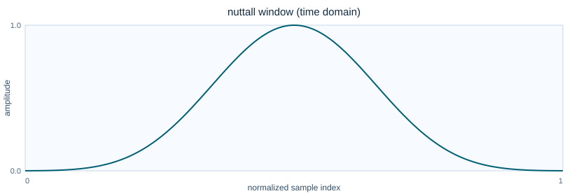 | 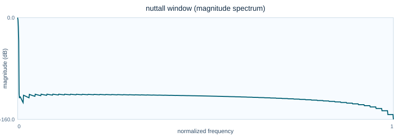 |
flattop | 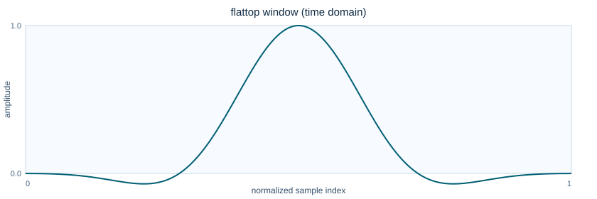 | 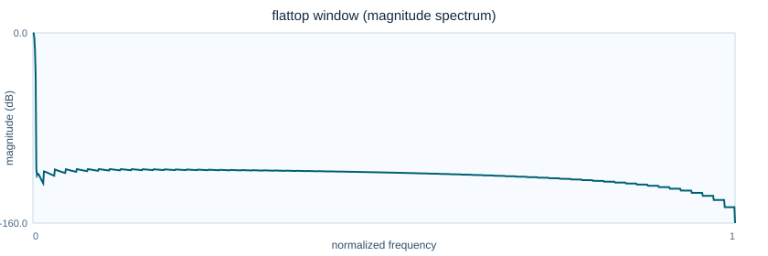 |
blackman_nuttall |  |  |
exact_blackman |  |  |
sine | 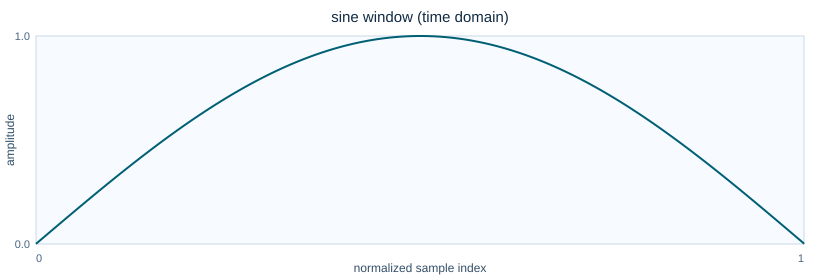 | 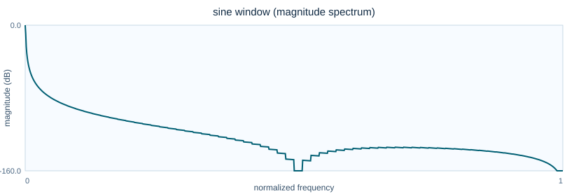 |
bartlett |  |  |
boxcar |  |  |
triangular | 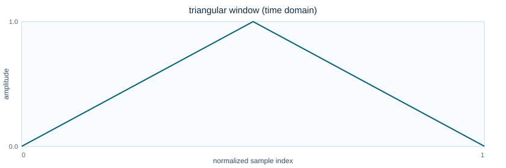 | 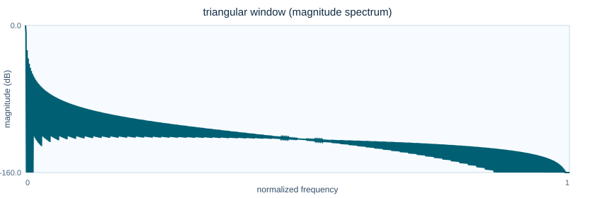 |
bartlett_hann |  |  |
tukey |  |  |
tukey_0p1 |  |  |
tukey_0p25 |  |  |
tukey_0p75 |  |  |
tukey_0p9 |  |  |
parzen | 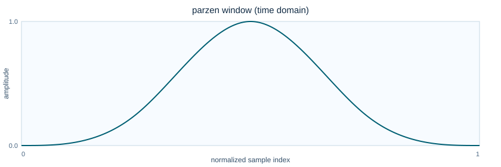 | 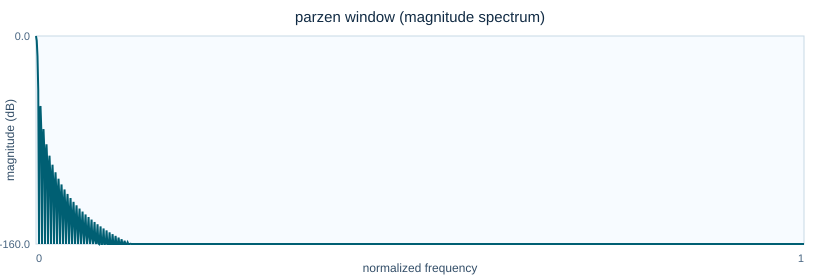 |
lanczos |  |  |
welch |  |  |
gaussian_0p25 |  |  |
gaussian_0p35 |  |  |
gaussian_0p45 |  |  |
gaussian_0p55 |  |  |
gaussian_0p65 |  |  |
general_gaussian_1p5_0p35 |  |  |
general_gaussian_2p0_0p35 |  |  |
general_gaussian_3p0_0p35 |  |  |
general_gaussian_4p0_0p35 |  |  |
exponential_0p25 |  |  |
exponential_0p5 |  |  |
exponential_1p0 |  |  |
cauchy_0p5 |  |  |
cauchy_1p0 |  |  |
cauchy_2p0 |  |  |
cosine_power_2 |  |  |
cosine_power_3 |  |  |
cosine_power_4 |  |  |
hann_poisson_0p5 |  |  |
hann_poisson_1p0 |  |  |
hann_poisson_2p0 |  |  |
general_hamming_0p50 |  |  |
general_hamming_0p60 |  |  |
general_hamming_0p70 |  |  |
general_hamming_0p80 |  |  |
bohman |  |  |
cosine | 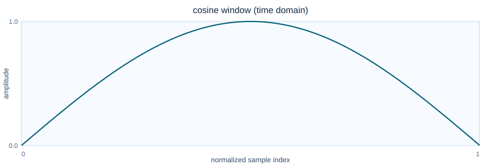 | 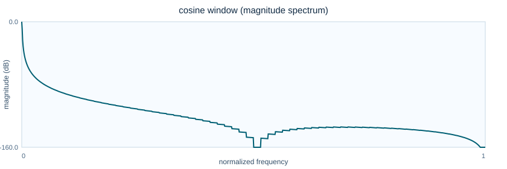 |
kaiser |  |  |
rect |  |  |